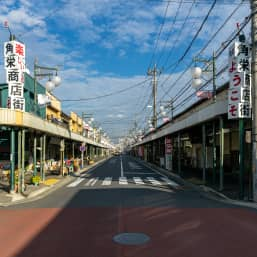

Nature and
Fun places
自然も、遊びも、賑わいも―。川越には自然豊かな公園が様々存在します。それはつまり、子育て環境が整っているということに他なりません。夏には川越水上公園のプールで思う存分遊びつくして、秋には全長約22キロの入間川サイクリングロードで爽やかな汗をかく。もちろん川越市の子育て支援も目を見張るものがあります。まさに、永住の地に相応しい場所といえます。
Nature and Parks
-
入間川サイクリングロード
狭山市の豊水橋から川越市の入間大橋まで21.9kmに及ぶ自転車道。途中、公園や緑地なども多く、休憩しながら走れるのでファミリーにもおすすめ。
-
なぐわし公園PikoA
隣接の資源化センターから発生する熱エネルギーを有効活用した温水プールをはじめ、温浴施設、トレーニングルームなどのある人気施設。
-
川越水上公園
豊富な種類の夏季プール、ボート、テニス、ルアーフライ釣場、フットサルコート、フィットネスクラブなど、子供から大人まで一日中遊べる。
-
安比奈親水公園
野草園、親水広場、テニスコート（クレー6面）、陸上競技場兼サッカー場、野球場（2面）、ソフトボール場（2面）等、18ヘクタールと非常に広い面積の公園。
-
御伊勢塚公園
武蔵野の面影が色濃く残る公園。雑木林が心地よく、芝生広場、フィールドアスレチック、テニスコートなどがある。
-
小畔水鳥の郷公園
大規模住宅地開発に伴い設置された「雨水調節池」の周囲を散策路として整備した公園。多くの水鳥の休息、営巣地になっており、撮影者も多い。
-
川越運動公園
陸上競技場、テニスコート、総合体育館が設備され様々なスポーツに対応。広い芝生を持つ自由平場には遊具が置かれ、ファミリーに人気です。
-
伊佐沼
四季を通してヘラブナ・マブナ・コイなどの釣りが楽しめる。春先には桜並木、6月下旬から7月初旬には古代蓮の花が見頃となる。
Person
繋がりをつくる人、楽しみを広げる人。
スポーツ自転車店「Over-DoBikers Support」のショップオーナー戸津井さん（元全日本MTBアジアチャンピオン）、
三輪自転車の珈琲屋台が人気のCOFFEE POST川島さん、関原さんにお話を訊きました！
FunPlaces
蔵造の街並みが魅力の小江戸、川越。他にも魅力の場所がたくさんあります。
-
アトレマルヒロ川越
JR埼京線、東武東上線川越駅東口すぐ。アパレルから食品、日用雑貨までバランス良く揃う。
-
西武本川越ペペ
西武本川越駅に直結。メンズ・レディスファッションのほか雑貨、インテリア、レストラン、カフェ、食品スーパーなど。
-
丸広百貨店川越店
川越市新富町、クレアモール沿いにある。丸広百貨店の中では飯能店に次ぐ老舗店舗で、川越市唯一の百貨店。
-
ルミネ川越
成城石井、ヴィレッジヴァンガード、ロフト、ブックファースト、Zoff等のショップが入る。
-
ウニクス川越
家庭用品、おもちゃ、文房具、インテリア、ギフトなどを取り揃えた雑貨チェーン店。ヤマハ音楽教室、ヤオコーや郵便局等も。
-

ウニクス南古谷
ファッションからスーパー、シネコンにボウリング場、スポーツクラブ、各種飲食店など、大型複合施設。
-
ニトリ川越
住まいのトータルコーディネートをサポートする家具＆インテリアショップ。
-

埼玉川越総合地方卸売市場
業務用食材の仕入れに旬の食材・新鮮な食材を提供する川越総合地方卸売市場。卸売業者や小売店はもちろん、土曜日は一般の方もお買い物ができる。
- 
角栄商店街
昭和の雰囲気を色濃く残す昔ながらのレトロな商店街。シャッターを下ろした店も多いものの、個性的なお店も多い。
-
U_PLACE
川越駅西口からペデストリアンデッキを進んだ先にオープンした、新しい川越のランドマークU_PLACE。市民サービスステーションも。
-
Su Lab
けん玉専門店・カフェ「Su Lab.（スーラボ）。販売用のけん玉、お試し用のけん玉がずらりと並ぶ個性あるカフェ！
-
COFFEE POST Honkawagoe
三輪自転車屋台COFFEE POSTがつくった一坪のコーヒースタンド。小江戸散策のスタートにドリンクを購入してみては？
-
RAG CAFE
川越駅から徒歩5分。リラックスした雰囲気の中で「旅する気分のコーヒーハウス」がコンセプト。
-
MOANA cafe&diner
川越駅から徒歩6分。ハワイアン創作料理が美味しく、南国気分が味わえる素敵なお店。
-
小さな旅 川越温泉
川越市上野田町の日帰り温浴施設。趣の異なる浴室が、偶数日奇数日の男女入れ替え制で楽しめる。
-

小江戸はつかり温泉 川越店
地下1,700mの温泉脈より汲み上げた天然温泉を使用した｢野天風呂｣のほか、様々なお風呂で人気。